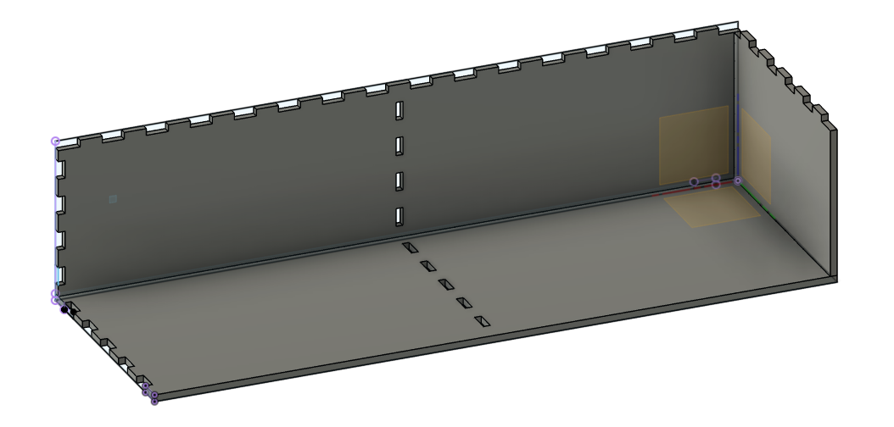

Laser
Skurður

Ég er staddur fyrir austan og fæ aðgang af fablab austurlands til að vinna að verkefnum fyrir þennan áfanga. leiser skerin sem er hér heitir epilog laser mini, með skurðarflöt upp á 300x600mm.
fyrsta sem ég gerði var að gera kerf prufu sem er ætlað að finna rétta skurðar þykkt á leisernum. prófunin er framkvæmd með að gera teikningu fyrir leiser skeran, ég teiknaði í autocad 20stk 10x200mm ferninga. teikningin var svo færð inn í inkscape og línur stiltar á 0.02 fyrir skurðin, eftir að hafa skorið efnið niður er því ýtt kubbunum saman og mælt samanlögð þykkt leiser skurðana, því máli er svo deilt með fjölda leiserskurða.
Fyrsta prufan sem ég gerði var í 4mm krossvið, krossviðurinn sem var til var heldur snúinn og var því kerf prófið ekki nógu nákvæmt þar sem skurðarþykkin breikkaði þar sem efnið lyftist upp. Ég notaði því 4mm mdf og var heildar skurður 3.087mm sem deild var með 20 og fann út að kefið fyrir 4mm mdf í þessum laiser er 0.147mm, enn það þarf samt að hafa í huga að leiserskurðrinn er ekki allveg 90° í gegnum efnið heldur myndar hann örlítið kónískan skurð.

kassi með skúffum, teiknað í fusion 360, skorið til í laser.
fyrir þetta verkefni ákvað ég að smíða kassa með fjórum innbyggðum skúffum. Hillan er ætluð í herbergið hjá syni mínum undir nerf skot. til að byrja með var rissað á blað helsu mál svo að skotin passi í skúffurnar og að efnisnýtingin væri sæmileg miðað við 300X600mm plötu.
Þegar kom að tölvuteikningu hef ég aðeins notast við autocad. til að taka fyrstu skrefin í fuison 360 byrjaði ég að fikta mig aðeins áfram á æfingum sem ég fann á netinu, eins og þessi hér frá fablab hornafyrði
Þegar kom að teikna kassan í fusion með parameters skoðaði ég myndband frá Jón Þór frá fablab akureyri. þar fer hann í gegnum hvar og hvernig maður setur inn upplýsingar í parameters töfluna. En til að fá réttar stærðir á töppunum skoðaði ég youtubevideo frá hobbyist maker og útfærði að að minni teikningu.
Teikningin tók talsverðan tíma, aðalega þó að læra á fusion forritið sem á eftir að nýtast manni vel fyrir fablab notkun í 3d prentun og cnc fræsara.

Hér er teikningin komin vel af stað og setti ég spjald í miðjan kassan til styrkingar. Það koma síðan 2 skúffur í hvert hólf
Hér er kassin orðin Tilbúinn og fór því næst að hanna skúffurnar. á skúffunum hafði ég haldfang fast á botnplötunni til að grípa í og opna skúffuna
Þegar teikningin var tilbúin eru allar hliðar lagðar á grunnflötin svo hægt sé að búa til skurðarmynd fyrir laserinn. í manufacture er valið new setup og allir fletir lagðir saman þannig myndin verður eins og samloka. teikningunum er svo dreyft svo þær lyggja ekki á horri annari. til að gera ráð fyrir skurðarþykktinni eða kerf er valið verkfæri inni í: manufacture- fabrication- cutting, þar bjó ég til nýtt verkfæri: epilog laser. ég var búinn að gera kerf prufu sem var 0.147 enn þar sem skurðurinn var aðeins kónskur ákvað ég að prófa að stilla kerfið á 0.18. teikningarnar voru svo vistaðar sem svg file og næst er að vinna þær í inkscape.
Teikningin af kassanum sem nú er orðin svg file, er importuð inn í inkscape. Ég bjó til blað sem var jafn stórt og spjaldið sem ég myndi nota í laser skeran eða 300x600mm. teikningin af kassanum er svo skipt upp í hópa eða ungroup og hver hlið raðað á svo að sem besta nýting næst úr plötunni. þegar öllum hlutum hefur verið komið inn á blað er að stilla útlínur, slökkva þarf á fyllingu og á línan að vera rauð og 0.02mm. teikningin er svo vistuð sem pdf skjal og er nú orðin tilbúin fyrir skeran.

til að skreyta þetta bætti ég við smá logo á kassan sem laserinn rasterar í efnið. þetta logo þurfti aðeins að nota trace bitmap til að fá myndina góða fyrir laserinn og staðsetja hana inn á viðeigandi stykki.
Til að byrja með skar ég út prufu til að sjá hversu vel fingurnir pössuðu og var ég mjög sáttur, hlutirnir hanga vel saman og þarf ekki að líma neytt
þetta varð loka útkoman og varð ég mjög sáttur með hana og verkefnið í heild. mesta vinnan var í að læra á fusion 360 og er mjög sáttur að hafa tekið þennan áfanga til að koma mér af stað í fusion.
Límmiði í vynilskera
Til að gera límmiða notaði ég inkscape forritið og bjó ég til batman logo með nafni og setti það á hurðina hjá stáknum mínum.
Ég byrja á að sækja mér mynd sem gott er að vinna með, til að geta breytt línum í myndinni þarf að hreynsa hana eða fara í: ferill-línuteikna bitamynd / path-tracebitmap. oft koma ljósmyndir ekki nægilega vel út í þessu ferli en gott er að nota svarthvítiar myndir eins og silhouette myndir.
Næst er að fara í: hlutur-fylling og útlína / object- fill and stroke, slökkva á fyllingu og kveikja á útlínu og passa á að það sé bara kvekt á rauðum í 255 og 100% sýnileg. meðan ég er að vinna myndina hef ég línuþykktina þannig ég sjái útlínunar (um 0.2mm) enn til að vynilskerinn virki þarf línan að vera 0.02mm
Ég bjó til nafnið hanns og vildi fá það í boga eins og logið. með því að velja nafnið og svo myndina fara svo í: texti-setja á feril / text-put on path birtist textinn á útlínun myndarinnar. það þarf líklegast að laga til staðsetninguna á textanum með að bæta við bili fyrir framan textan til að ýta honum eftir ferlinum á myndinni. þegar textinn er kominn undir myndinda dróg ég hana aðeins neðar til að fá loka staðsetningu.
Í lokin er myndin og textinn settur í línuþykkt 0.02mm. vel mynd og texta og fer í: breyta-laga stærð síðu að myndavali. þá breytist blaðiðustærðin utan um myndina og logoið. myndin er vistuð sem pdf skjal og er tilbúin í vynilskeran.
Ég hafði gert límmiða einu sinni áður í fablab enn þá gerði ég límmiða fyrir veiðibílinn hjá mér sem er 92 model af hilux og fékk hann nafnið goosemobile